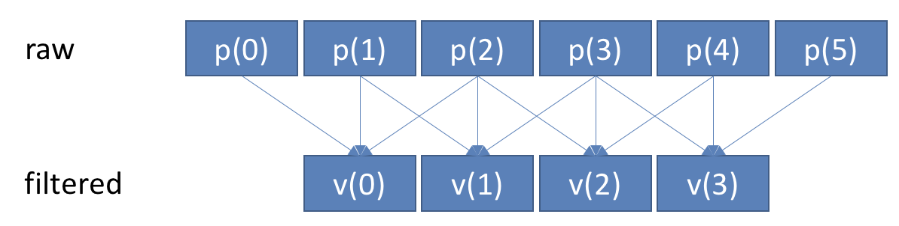

📖 Indexing, slicing and filtering unidimensional arrays#
This section shows how to read or write specific elements of a unidimensional array, using indexing, slicing and filtering.
Tip
Indexing and slicing arrays is very similar to indexing and slicing lists.
Indexing means accessing one element using an index:
the_list[2]Slicing means accessing several elements using a slice:
a_list[0:3]
Please go back to sections 📖 Creating and indexing lists/tuples and 📖 Slicing lists for a refresh on indexing and slicing lists.
Through this section, we will work with two example arrays that represent some data (data) and the time at which these data occur (time):
import numpy as np
import matplotlib.pyplot as plt
data = np.array([0.0, 0.58, 0.95, 0.95, 0.58, 0.0, -0.59, -0.96, -0.96, -0.59])
time = np.arange(10) / 10
plt.plot(time, data, "s-")
plt.grid(True)
plt.show()
📄 Indexing#
Indexing a unidimensional array is identical to indexing a list. To read one element of a list/array:
data[2] # Read the 3rd element
0.95
To write one element of a list/array:
data[2] = 0.58 # Assign 0.35 to the 3rd element
# Plot the result
plt.plot(time, data, "s-")
plt.grid(True)
data[2] = 0.95 # Reset to its original value
Negative indexing also works:
# Read the last data
data[-1]
-0.59
📄 Slicing#
Slicing a unidimentional array is identical to slicing a list. To read several elements of a list/array:
# Keep only the values at indexes 2, 4, 6 and 8 of the original array
# Start at 2 (incl.), up to 9 (excl.) by steps of 2:
data_subset = data[2:9:2]
time_subset = time[2:9:2]
# Plot the result
plt.plot(time, data, "s-", label="original data")
plt.plot(time_subset, data_subset, "o-", label="subset")
plt.grid(True)
plt.legend()
plt.show()
To write several elements of a list/array:
# Replace values at indexes 2, 4, 6, 8 of the original list/array by
# [-0.7, -0.8, -0.9, -1.0]
modified_data = data.copy()
modified_data[2:9:2] = [-0.7, -0.8, -0.9, -1.0]
# Plot the result
plt.plot(time, data, "s-", label="original data")
plt.plot(time, modified_data, "o-", label="modified data")
plt.grid(True)
plt.legend()
plt.show()
Tip
Note the line
modified_data = data.copy()
Using the copy method is required here, because otherwise we are just telling Python to assign an additional name (modified_data) to the same variable (data). In this case, modifiying modified_data would also modify data since they are both the same array. Using the copy method creates a new, unique array so that modifying one won’t modify the other.
💪 Exercise 1#
You used an accelerometer to detect a small movement. The acceleration returned by the instrument is expressed by this list, at a sampling frequency of 100 Hz.
acc = [0.01, 0.01, 0.00, 0.00, 0.02, 0.77, 0.82, 0.86, 0.81, 0.74, 0.07, 0.02]
However, by carefully inspecting your signal, you realize that the data is late by 40 milliseconds. You want to fix this delay, but you also want to keep the same number of samples in your signal.
Using NumPy slicing, write a code that moves forward every data by 40 ms.
Fill the missing data at the end with zeros.
In summary, you want to produce the blue curve below:
Tip
Do not forget to convert the list to an array.
Separate the problem in two separate steps. First shift the signal, then fill the rest of the signal with zeroes. It is suggested to plot the intermediary result between both steps.
Shifting the signal is equivalent to read a certain portion of the signal, and then assign this portion to another portion of the signal.
Show code cell content
# Convert acc to an array
acc = np.array(acc)
# We will plot intermediary steps, to better visualize what we do.
plt.subplot(1, 3, 1)
plt.plot(acc, "o-")
plt.title("Original signal")
# STEP 1 - Shift the signal.
#
# At 100 Hz, the sampling period is 1/100 = 0.01. Therefore, 40 ms is 4 samples.
# We need to shift the acceleration by -4 samples. In other words, we need to
# assign acc[from sample 4 to the end] to acc[from sample 0 to the end-4]
acc[:-4] = acc[4:]
# Plot the new signal
plt.subplot(1, 3, 2)
plt.plot(acc, "o-")
plt.title("Shifted signal")
# STEP 2 - Fill the rest with zeros
acc[-4:] = 0
# Let's see the result
plt.subplot(1, 3, 3)
plt.plot(acc, "o-")
plt.title("End result")
plt.tight_layout()
plt.show()
📄 Filtering#
We learned how to access one data using indexing, and multiple regularly-spaced data using slicing. To read multiple non-regularly-spaced data, we use filtering. We call it filtering because we selectively filter out some data using a mask.
Boolean mask#
Here is our original array or 10 values:
data = np.array([0.0, 0.58, 0.95, 0.95, 0.58, 0.0, -0.59, -0.96, -0.96, -0.59])
time = np.arange(10) / 10
plt.plot(data, "s-")
plt.grid(True)
plt.show()
Let’s say we want to keep only the following indexes:

We can create a boolean mask where each data to keep is True, and each data to discard is False:
bool_mask = [True, False, False, True, False, False, False, False, True, True]
Then, we use the mask exactly like we would index or slice the list:
plt.plot(time, data, "s-", label="Original data")
plt.plot(time[bool_mask], data[bool_mask], "o-", label="Filtered data")
plt.legend()
plt.show()
Integer mask#
We can also build a mask using a list or array of integers. In this case, this is a list of the indexes to keep:
int_mask = [0, 3, 8, 9]
plt.plot(time, data, "s-", label="Original data")
plt.plot(time[int_mask], data[int_mask], "o-", label="Filtered data")
plt.legend()
plt.show()
Tip
Since indexes can also be negative, then masks of integers can also use negative values.
📄 Conditional filtering#
In section 📖 Arithmetics and comparisons, we learned how to generate arrays of bool by comparing an array to a number using comparison operators such as ==, <, >=, etc. These comparisons make a powerful way to filter an array. For example, to keep every data of an array that is positive:
to_keep = data >= 0 # Create a boolean mask of the values to keep
plt.plot(time, data, "s-", label="Original data")
plt.plot(time[to_keep], data[to_keep], "o-", label="Filtered data")
plt.legend()
plt.show()
Or, as another example, to replace any negative value by 0:
new_data = data.copy()
# Assign 0 to every index of new_data where data is zero
new_data[data < 0] = 0
plt.plot(time, data, "s-", label="Original data")
plt.plot(time, new_data, "o-", label="New data")
plt.legend()
plt.show()
💪 Exercise 2#
We measured the step length of a person during 10 steps. Here are these measurements:
step_length = np.array(
[0.707, 0.730, 0.752, 0.707, 0.691, 0.726, 0.722, 0.726, 0.710, 0.661]
) # in meters
For each of these questions, write a single line of code to print the requested step lengths:
From the third step up to the end;
The two last steps;
All steps, but without the two firsts and the two lasts;
Every other step starting from the third;
Steps 2, 5, 6, 7, with step 0 being the first.
The first and the last.
Show code cell content
# 1. From the third step up to the end;
print(step_length[2:])
# 2. The two last steps;
print(step_length[-2:])
# 3. All steps, but without the two firsts and the two lasts;
print(step_length[2:-2])
# 4. Every other step starting from the third;
print(step_length[2::2])
# 5. Steps 2, 5, 6, 7, with step 0 being the first.
print(step_length[[2, 5, 6, 7]])
# Note the double bracket: this is equivalent to write:
# >> mask = [2, 4, 6, 7]
# >> step_length[mask]
# 6. The first and the last.
print(step_length[[0, -1]])
[0.752 0.707 0.691 0.726 0.722 0.726 0.71 0.661]
[0.71 0.661]
[0.752 0.707 0.691 0.726 0.722 0.726]
[0.752 0.691 0.722 0.71 ]
[0.752 0.726 0.722 0.726]
[0.707 0.661]
💪 Exercise 3#
The position of an object has been recorded in meters during one second at a sampling frequency of 100 Hz:
p = np.array(
[
0. , 0.0099, 0.0196, 0.0291, 0.0384, 0.0475, 0.0564, 0.0651,
0.0736, 0.0819, 0.09 , 0.0979, 0.1056, 0.1131, 0.1204, 0.1275,
0.1344, 0.1411, 0.1476, 0.1539, 0.16 , 0.1659, 0.1716, 0.1771,
0.1824, 0.1875, 0.1924, 0.1971, 0.2016, 0.2059, 0.21 , 0.2139,
0.2176, 0.2211, 0.2244, 0.2275, 0.2304, 0.2331, 0.2356, 0.2379,
0.24 , 0.2419, 0.2436, 0.2451, 0.2464, 0.2475, 0.2484, 0.2491,
0.2496, 0.2499, 0.25 , 0.2499, 0.2496, 0.2491, 0.2484, 0.2475,
0.2464, 0.2451, 0.2436, 0.2419, 0.24 , 0.2379, 0.2356, 0.2331,
0.2304, 0.2275, 0.2244, 0.2211, 0.2176, 0.2139, 0.21 , 0.2059,
0.2016, 0.1971, 0.1924, 0.1875, 0.1824, 0.1771, 0.1716, 0.1659,
0.16 , 0.1539, 0.1476, 0.1411, 0.1344, 0.1275, 0.1204, 0.1131,
0.1056, 0.0979, 0.09 , 0.0819, 0.0736, 0.0651, 0.0564, 0.0475,
0.0384, 0.0291, 0.0196, 0.0099
]
)
Knowing that:
Write a program of only 1 to 2 lines that calculates the speed of the object. Then, plot the velocity and position on a same figure to check your result.
Tip
Due to the calculation of speed that requires position values before and after the current sample, the velocity array will be 2 values shorter than the position array.

Show code cell content
t = np.arange(100) / 100
v = (p[2:] - p[0:-2]) / (t[2:] - t[0:-2])
# Since the time step is regular at 0.01, we could also calculate v using a single line:
v = (p[2:] - p[0:-2]) / (2 * 0.01)
# Plot the result
plt.plot(t, p, label="Position (m)")
plt.plot(t[1:-1], v, label="Velocity (m/s)")
plt.xlabel("Time (s)")
plt.grid(True)
plt.legend()
plt.show()
💪 Exercise 4#
You recorded a noisy signal:
signal = np.array(
[
0.436, 0.493, 0.467, 0.467, 0.482, 0.497, 0.474, 0.493, 0.474, 0.467,
0.470, 0.455, 0.482, 0.501, 0.470, 0.482, 0.467, 0.467, 0.558, 0.413,
0.463, 0.444, 0.463, 0.417, 0.528, 0.455, 0.486, 0.459, 0.490, 0.459,
]
)
You want to smooth this signal using a moving average with a window of three samples. This means that you want to create a new array where each value is the average of the three neighbour values of the raw signal:

Using only one line, apply such a filter on the raw, noisy signal. Then, plot both the raw and filtered signal on the same figure to verify your result.
Show code cell content
filtered = (signal[0:-2] + signal[1:-1] + signal[2:]) / 3
plt.plot(signal, label="raw")
plt.plot(filtered, label="filtered")
plt.legend()
plt.show()